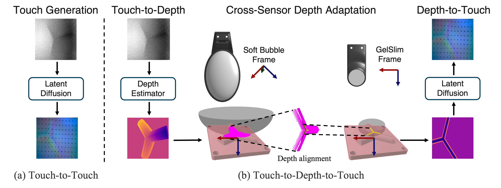

Today's visuo-tactile sensors come in many shapes and sizes, making it challenging to develop general-purpose tactile representations. This is because most models are tied to a specific sensor design. To address this challenge, we propose two approaches to cross-sensor image generation. The first is an end-to-end method that leverages paired data (Touch2Touch). The second method builds an intermediate depth representation and does not require paired data (T2D2: Touch-to-Depth-to-Touch). Both methods enable the use of sensor-specific models across multiple sensors via the cross-sensor touch generation process. Together, these models offer flexible solutions for sensor translation, depending on data availability and application needs. We demonstrate their effectiveness on downstream tasks such as in-hand pose estimation and behavior cloning, successfully transferring models trained on one sensor to another.
(a) We train a latent diffusion model to direct predict one sensor's signal from another's, using paired training data. (b) We use depth as an intermediate representation, thus avoiding the need for paired training data. We predict depth from touch, adapt the depth map to match the specifications of another sensor, then generate a touch signal from the resulting depth map.

We train behavior-cloning policy on GelSlim tactile images to roll a marble from random starts to the image center. At test time on DIGIT, we translate each DIGIT tactile signature to its GelSlim counterpart with T2D2 and run the same policy in a zero-shot manner.
@inproceedings{rodriguezcross,
title={Cross-Sensor Touch Generation},
author={Rodriguez, Samanta and Dou, Yiming and Oller, Miquel and Owens, Andrew and Fazeli, Nima},
booktitle={9th Annual Conference on Robot Learning}
}